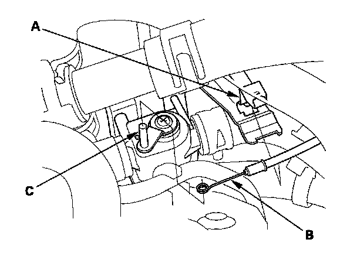
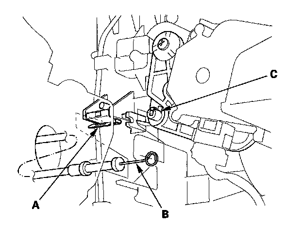
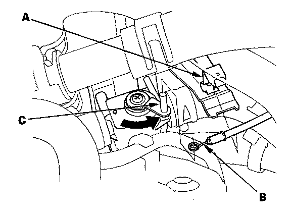

Heater Control Valve Cable: Adjustments
Heater Valve Cable Adjustment
1. From under the hood, open the cable clamp (A), then disconnect the heater valve cable (B) from the heater valve arm (C).

2. From under the dash, disconnect the heater valve cable housing from the cable clamp (A), and disconnect the heater valve cable (B) from the driver's air mix control linkage (C).
3. Set the temperature control dial to Max Cool (Lo) with the ignition switch ON (II).
4. Attach the heater valve cable (B) to the driver's air mix control linkage (C) as shown step 2. Snap the heater valve cable housing into the cable clamp (A).
NOTE: Make sure the ring-end of the cable is pushed all the way to the base of the pin on driver's air mix control linkage.

5. From under the hood, turn the heater valve arm (C) to the fully closed position as shown, and hold it. Attach the heater valve cable (B) to the heater valve arm, and gently pull on the heater valve cable housing to take up any slack, then install the heater valve cable housing into the cable clamp (A).